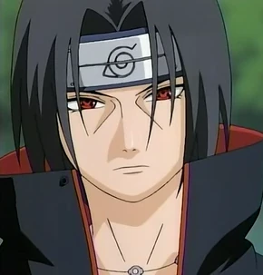

Uchiha Itachi

Summary
A shinobi prodigy of the Uchiha Clan with an unmatched intellect
and an unwavering commitment to the greater good of his village.
Dedicated to serving as a protector from the shadows, prioritizing
the peace of Konohagakure above all else, even at great personal
sacrifice. Proficient in strategic analysis, black-ops intelligence,
and specialized combat techniques
Education
Ninja Academy - Konohagakure
Chunin Exams
- Promoted to Chunin at age 10.
Work Experience
- ANBU - Konohagakure
- ANBU Captain, Age 13
- Youngest shinobi ever to be promoted to this rank.
- Conducted high-stakes, covert missions with elite precision.
- Served as an intelligence operative for the village.
- Akatsuki
- Infiltrator and Counter-Intelligence Agent
- Monitored the organization's activities to protect Konohagakure.
- Engaged in strategic confrontations to ensure the balance of power.
Skills
- Ninjutsu Mastery:⭐️⭐️⭐️⭐️⭐️
Exceptional control over fire-style techniques.
- Genjutsu (Illusionary Techniques):⭐️⭐️⭐️⭐️⭐️
World-class user, known for creating illusions such
as Tsukuyomi to incapacitate opponents.
- Sharingan & Mangekyou Sharingan:⭐️⭐️⭐️⭐️⭐️
Prodigious user of the clan's dōjutsu, with unique
abilities including Amaterasu.
- Tactical Analysis:⭐️⭐️⭐️⭐️⭐️
Highly skilled in on-the-fly strategy and psychological warfare.
- Taijutsu (Hand-to-Hand Combat):⭐️⭐️⭐️⭐️
Proficient in close-quarters combat.
Awards&Certifications
- Awards and Honors
- ANBU Captaincy: Achieved at an unprecedented young age,
demonstrating exceptional talent and leadership.
- Prodigy Status: Officially recognized by Konohagakure as
a shinobi prodigy, setting records for academy graduation and Chunin promotion.
- Certifications
- Advanced Genjutsu Certification: Acknowledged master of illusionary techniques,
holding an unparalleled skill level in this field.
- High-Level Stealth and Intelligence Operative: Certified by the ANBU Black Ops as
an elite agent, proficient in infiltration and covert operations.
Other